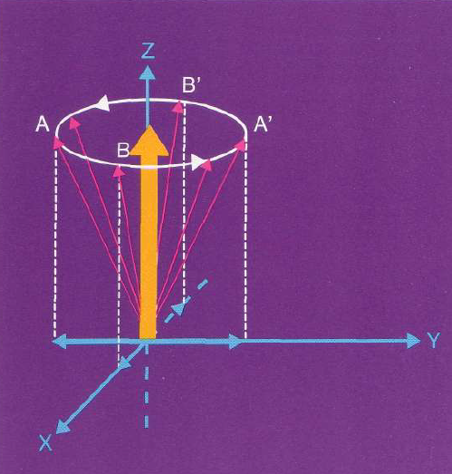

Para entender el fenómeno de la señal de Resonancia Magnética y la generación de imágenes por Resonancia Magnética (IRM) es necesario estudiar el comportamiento de los núcleos, y algunas de sus propiedades. El núcleo tiene una masa con uno o más niveles de la energía (dependiendo de la clase del elemento empleado) y poseen un momento angular intrínseco llamado espín. El espín I está cuantizado para ciertos valores discretos. Estos valores dependen del número atómico y del peso atómico de cada núcleo. Dependiendo el valor del espín, una partícula puede tener un momento magnético µ (medida vectorial del torque ejercido sobre un sistema magnético cuando se aplica un campo magnético). Los elementos con peso atómico par (protones + neutrones), tienen un momento magnético nulo, mientras que los que tienen peso atómico impar, cuentan con un momento magnético. Un ejemplo de éstos es el hidrógeno, que presenta sólo un protón en su núcleo. Se tienen básicamente tres grupos de valores para I: cero, valores medios y valores enteros. El caso que interesa en IRM es cuando se tienen valores medios de I (p. ej. 1/2, 3/2, 5/2). Para entender el proceso de RM podemos hablar del núcleo de hidrógeno, en específico de los protones del núcleo de hidrógeno (La subpartícula del núcleo atómico de mayor importancia en IRM ). El núcleo de hidrogeno (1H) es la elección más simple, debido a que tiene un espín I cuyo valor es ½ y es el isótopo más abundante, y además al estar compuestos los tejidos del cuerpo humano de este material (es el compuesto presente en las moléculas de agua, que es lo que en su mayoría compone a los tejidos biológicos ), lo hacen el núcleo de elección para la adquisición de imágenes por RM. Para entender el origen de la señal por RM, es necesario emplear los principios de la mecánica cuántica, pero también la mayoría de los conceptos empleados, se pueden analizar con la ayuda de la mecánica clásica.
Un núcleo que está girando actúa como un dipolo magnético µ (a menudo llamado espín nuclear), orientado en la dirección del eje de rotación. Estos espines pueden ser considerados como pequeños imanes con direcciones Norte/Sur (dos posibles estados de energía, paralelo +1/2 y antiparalelo -1/2), distribuyéndose aleatoriamente cuando no hay un campo magnético externo presente. Cualquier sistema de espines posee un momento magnético y es paralelo a su eje de rotación. Si el sistema de espines es expuesto a un campo magnético estático externo llamado B0, los protones son capaces de alinearse en la dirección del campo estático de manera paralela o antiparalela. La posición paralela es la más común debido a que se requiere menor energía para alinear un núcleo en esa dirección, por lo que hay un número ligeramente mayor de núcleos alineados en el sentido del campo magnético. Entre las posiciones de los núcleos alineados en forma paralela y antiparalela existe una diferencia de energía y se utiliza para detectar la señal de resonancia magnética. La orientación del espín nuclear y la manipulación del momento magnético debido a ciertos procesos experimentales es lo que da origen a la señal de RM.
[Aquí va una imagen de espín sin campo y con campo magnético externo]
En medicina y en particular en IRM el término vóxel se usa para referirse a un volumen elemental de tejido, idealmente homogéneo en composición, cuya densidad de magnetización del protón puede ser representada por el brillo del pixel en la imagen. En este volumen se encuentran momentos magnéticos nucleares, debido a que se compone de una gran cantidad de moléculas abarcando algunos núcleos de hidrógeno, en donde cada uno tiene un momento magnético µ, cuya suma de momentos entre unidad de volumen se define como magnetización (M). Si el campo magnético no está presente, el momento magnético puede ser orientado aleatoriamente los espines están en estado de equilibrio y si los comparamos a cada uno de ellos como un vector, entonces tendrán una dirección diferente entre cada uno de ellos por lo que la magnetización neta será cero. Cuando el campo magnético estático es aplicado, el sistema de espines genera una magnetización neta que estará orientada en la dirección del campo magnético y tendrá dos componentes: magnetización longitudinal y magnetización transversal. En general las mediciones se realizan a partir de una colección de espines y no de un solo espín y el valor de la magnetización neta estará dado entonces por:
donde M0 es la permeabilidad magnética en el vacío, g es la constante de radio giromagnética, es la constante de Planck, kB es la constante de Boltzmann, T es la temperatura, c es el número de protones por unidad de volumen.
En el núcleo atómico, cada espín paralelo (+1/2), se puede aparear con otro protón o neutrón, pero de espín antiparalelo (-1/2), haciendo que la suma de sus momentos magnéticos intrínsecos o espines sea cero bajo la presencia de un campo magnético externo B0. La suma de todos estos apareamientos, dependiendo del número de protones y neutrones, y el hecho de que la mayoría de ellos se encuentren en un estado de baja energía, me determinarán la magnetización neta (M), también representada por un vector. Es decir, es el resultado de la orientación total de los espines (volumen de magnetización) bajo un campo magnético estático. La magnitud del vector de magnetización neta (M) es proporcional a la diferencia de poblaciones en el estado paralelo y antiparalelo al campo, es decir, en los estados +1/2 y -1/2, siendo un poco más los que estén alineados con el campo (+1/2), haciendo que el resultado neto sea la alineación con el campo externo.
(a) Protones apuntando hacia abajo se cancelan con sus opuestos que apuntan hacia arriba. (b) Quedan cuatro protones sin oposición que quedan hacia arriba.
Al estar distribuidas aleatoriamente las componentes del vector de magnetización neta, dividiéndose en el plano x-y o plano transversal y el plano z o plano longitudinal. En el plano x-y, la suma neta de estas componentes será igual a cero porque se suman fuerzas magnéticas orientadas en direcciones opuestas, sin embargo, sobrevive la componente que apunta en dirección del campo B0 (eje z).
Fuerza magnética sobrevive sólo para componente en el eje z, puesto que para los otros ejes, mis vectores se descomponen haciendo que A se cancele con su opuesta componente magnética A' y B con B'.
Esto significa que al colocar a un paciente en el imán del sistema de RM, el paciente mismo se convierte en un imán, es decir, tiene su propio campo magnético. Como hemos visto, el nuevo vector magnético debido al paciente, está en la dirección de las líneas del campo magnético externo (plano longitudinal). Este nuevo vector sería ideal para obtener una señal, sin embargo, no se puede medir la magnetización del paciente porque los campos están de forma paralela.
Los espines de los protones, al estar alineados en paralelo o anti paralelo respecto a las líneas del campo, pueden moverse alrededor de ellas, tomando la dirección del campo externo como el eje de rotación, describiendo un giro de forma cónica, llamado precesión.
La fuerza que tenga el campo externo (B0) y una constante de proporcionalidad del átomo implicado, la constante giromagnética γ (diferente para cada material, por ejemplo, el valor para protones es 42.5 MHz / T), determinando la rapidez con la que giran los espines. Esta relación está dada por la frecuencia de resonancia de Larmor (ω0) o frecuencia de precesión:
ω0 = γB0/2π
Esta expresión me representa la radiación electromagnética de una frecuencia determinada, al cambiar de estado el espín.